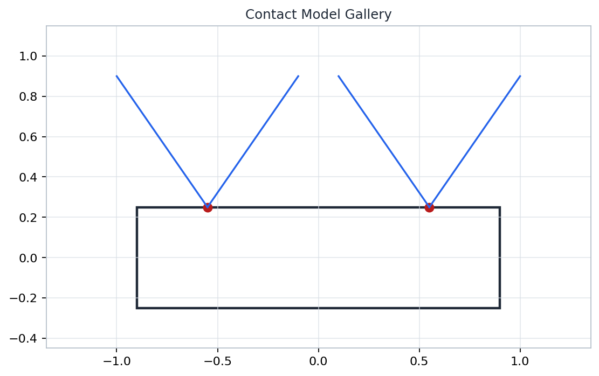
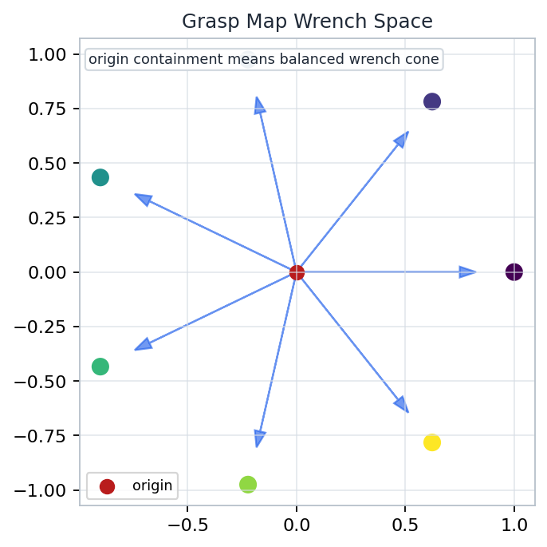
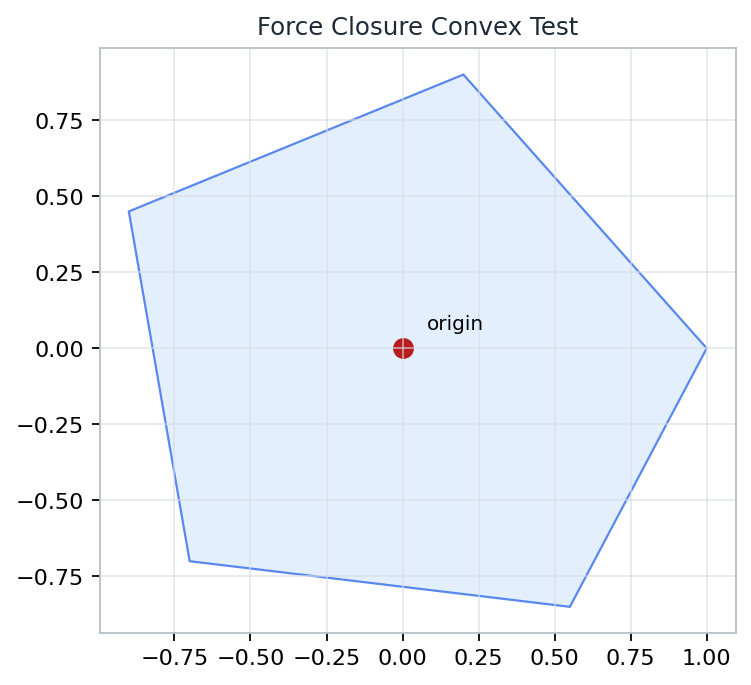

Chapter 05
Multifingered Hand Kinematics
How do local contact forces, contact motions, and finger velocities become object-level wrench capability?
Contacts Every finger contributes a local frame, a feasible force set, and a basis of primitive contact wrenches.
Maps The grasp map stacks those local contributions into object wrench space, where rank and convexity become visible.
Motion Fixed and rolling contacts impose velocity constraints, so force closure and manipulation are different capabilities.
grasp rank 3
internal forces 3D
residual 4.95e-16
origin test true
Source grounding: Chapter 05, printed pages 211-264; PDF pages 229-282. Notebook: A-Mathematical-Introduction-to-Robotic-Manipulation/part-02-multifingered-manipulation/chapter-05-multifingered-hand-kinematics/05-multifingered-hand-kinematics.ipynb
Open by separating the chapter into three connected questions. Contacts define what forces can be applied locally, the grasp map says how those forces appear as object wrenches, and contact kinematics says which motions can be produced without violating the contact model. The numerical checks on the slide give students a concrete anchor for the companion notebook: a planar grasp map has rank three, a three-dimensional internal-force space, a near-zero internal-force residual, and a positive convex-hull closure test.
Why Hands Are Harder Than Grippers Many contacts, many constraints
Parallel-Jaw Gripper
Usually designed for a small number of stable contact modes.
Motion planning is often dominated by approach, squeeze, and lift.
The object is treated as held once the closing direction is adequate.
Multifingered Hand
Each finger has its own contact frame, friction cone, and joint Jacobian.
Forces are unilateral: a contact can push but not pull the surface.
Rolling, sliding, and breaking contact change the geometry while the task runs.
two planned normals
several moving contact frames
Visible source: Chapter 05 contact, grasp-map, and rolling-contact route, printed pages 211-264.
Use this comparison to make the problem feel geometric rather than merely mechanical. A gripper can often be modeled as two planned normal reactions plus enough friction for lifting. A hand is different because each finger brings independent kinematics, each contact admits only certain forces, and the contact state itself can evolve. Tell students that the chapter is not simply adding more fingers to a gripper; it is changing the mathematical object from a closing action to a coupled force and motion system.
Contact Frames And Wrench Bases Local coordinates
normal n_i
tangent t_i
moment arm p_i
contact frame
C_i = (t_i,n_i)
basis column: local force at C_i becomes object wrench at O
Point Contact Wrench
$$w_i=\begin{bmatrix} f_i \\ p_i \times f_i \end{bmatrix}$$
Basis Choice
A contact model chooses admissible basis forces in the contact frame, then transports their wrenches to the object frame.
Sign and frame conventions are not bookkeeping. They decide whether wrench columns add constructively or cancel the wrong way.
Source grounding: contact frames and contact wrench bases, Chapter 05, PDF pages 229-282.
This slide establishes the coordinate discipline for the rest of the lecture. At contact i, the surface normal and tangential directions define a local frame. A feasible contact force is first described in that frame, but the object feels a wrench expressed about an object frame. The cross product term records the torque from the contact point to the object reference point. Emphasize that changing the contact frame or changing the reference point changes the coordinates, not the physical contact.
Friction Cones Are Feasible Force Sets Unilateral contact

Notebook artifact: contact-model-gallery.png. Inspection target: cone directions and contact-model assumptions.
Planar Coulomb Cone
$$\mathcal{F}_i=\{\, f_n n_i+f_t t_i:\ f_n\ge 0,\ |f_t|\le \mu f_n\,\}$$
For computation, a cone is often approximated by finitely many edge rays. Each edge ray becomes a primitive wrench column.
A force outside the cone is not merely large. It is infeasible for the assumed contact because it would require pulling or sliding.
Artifact grounding: artifacts/chapter-05/figures/contact-model-gallery.png; Chapter 05 printed pages 211-264.
Point students to the cone before discussing matrices. The normal component must be nonnegative because the finger can push into the object but cannot glue itself to the surface. The tangential component is bounded by the friction coefficient times the normal load. The computational move in the notebook is to replace each cone by edge directions; this converts a continuous feasible-force set into a finite list of wrench rays that can be assembled into a grasp map.
The Grasp Map Local forces to object wrench

Notebook artifact: grasp-map-wrench-space.png. Inspection target: contact columns summing in object wrench space.
Stacked Linear Map
$$w=Gf,\qquad G=\begin{bmatrix}G_1&G_2&\cdots&G_k\end{bmatrix}$$
The chapter-05 check builds a planar map with shape \(3\times 6\): three object wrench coordinates and six primitive contact rays.
Rank three means the columns span planar wrench space as a linear space, but force closure still needs the cone and positivity test.
Artifact grounding: artifacts/chapter-05/figures/grasp-map-wrench-space.png; checks/final-sanity.json.
Introduce G as a bookkeeping device with physical content. The vector f stores local primitive contact force magnitudes, while G converts those magnitudes into a wrench on the object. The notebook's map has three rows because a planar rigid body has two force coordinates and one torque coordinate. The key distinction is that rank describes linear span, while a real grasp also respects nonnegative primitive magnitudes and friction-cone feasibility.
Planar And Soft-Finger Examples What changes in the basis?
planar point contact
soft finger torsion
Planar Wrench Column
$$w=\begin{bmatrix}f_x\\ f_y\\ p_x f_y-p_y f_x\end{bmatrix}$$
Soft-Finger Addition
A finite contact patch can transmit a torsional moment about the contact normal, adding a moment primitive to the basis.
The contact model changes the columns available to \(G\), so it can change closure even if contact locations stay fixed.
Source grounding: contact models and wrench bases, Chapter 05, printed pages 211-264.
Use the planar expression to show exactly where torque enters. A force at a point contributes both a net force and a scalar moment about the object reference. Then contrast this with soft-finger contact: the contact patch is not just a point force, because it can resist a torsional moment around the normal. This is a modeling choice with algebraic consequences; adding a basis direction changes the grasp map columns and may change whether closure can be certified.
Force Closure Definition Every disturbance has an answer
Definition
A grasp has force closure when admissible contact forces can generate an arbitrary object wrench, including a balancing wrench for every small external disturbance.
$$\operatorname{pos}\{w_1,\ldots,w_m\}=\mathbb{R}^d$$
Full rank is necessary but not sufficient: closure is a positive-combination statement, not just a span statement.
Source grounding: force closure and positive spans, Chapter 05, PDF pages 229-282.
Give the definition in disturbance language first. If the environment pushes the object in any wrench direction, the contacts must be able to produce an opposite wrench without requiring negative contact magnitudes. Then translate that statement into the positive span of primitive wrenches. This is where students often overuse rank: a set of columns can span the vector space while still failing to generate all directions with nonnegative coefficients.
Internal Forces As Proof Mechanism Null space with preload
external disturbance
G f_int = 0
Internal Force Space
$$\mathcal{N}(G)=\{\,f:\ Gf=0\,\}$$
An internal preload changes contact forces without changing the net object wrench. It can keep all contacts inside their friction cones.
chapter check: internal_force_dimension = 3; internal_force_residual = 4.945123661429877e-16
Artifact grounding: checks/final-sanity.json and Chapter 05 internal-force discussion.
Explain internal force as the hand squeezing in a way the object does not feel as a net wrench. Algebraically, those force vectors lie in the null space of G. This is useful for proof because a strictly feasible internal preload can give room to add small corrective forces while staying inside the cones. The notebook check records a three-dimensional null space and an essentially zero residual, so students should connect the numerical residual to the equation G f equals zero rather than treating it as a random diagnostic.
Convex Hull Test For Closure Origin containment

Notebook artifact: force-closure-convex-test.png. Inspection target: the origin is contained in the convex hull.
Finite Ray Test
$$\sum_{j=1}^{m}\lambda_j w_j=0,\qquad \lambda_j\ge 0,\qquad \sum_{j=1}^{m}\lambda_j=1$$
If the origin lies in the interior of the convex hull of normalized primitive wrenches, the positive span covers every wrench direction.
chapter check: origin_in_convex_hull = true
Artifact grounding: artifacts/chapter-05/figures/force-closure-convex-test.png; checks/final-sanity.json.
This slide turns force closure into a convex geometry problem. The lambdas form a convex combination of primitive wrench rays. If those nonnegative weights sum to one and produce the origin, then the origin is in the convex hull; with the appropriate interior condition, every small wrench direction can be balanced by scaling positive combinations. Ask students to inspect the artifact as geometry first and then read the linear feasibility equations as the computational version of the same claim.
How Many Contacts Are Enough? Counting is only a first filter
Wrench Dimension
Planar rigid body: \(d=3\). Spatial rigid body: \(d=6\). A positive spanning set in \(d\) dimensions needs at least \(d+1\) primitive directions.
Contact Model
A frictionless point gives one normal ray. A friction cone approximation gives multiple edge rays. A soft finger can add torsion.
Placement
More contacts can still fail if their wrench rays cluster on one side or miss torque directions around the object.
contact count
k fingers
primitive rays
cone edges and torsion
convex test
origin interior
Source grounding: lower-bound intuition and contact-model dependence in Chapter 05, printed pages 211-264.
Resist giving students a single magic number. Counting provides a necessary filter because a positive spanning set in a d-dimensional wrench space needs at least d plus one primitive directions. But contacts are not primitive directions until a contact model has been chosen. A frictionless contact contributes a single normal ray, while a frictional approximation may contribute two or more edge rays. Placement also matters: enough rays can still be arranged so the origin is outside their convex hull.
Antipodal Grasps Two contacts, shared normal line
left cone
right cone
contact normals meet along the same line
Geometric Test Two contacts are antipodal when the line joining them lies inside both friction cones with opposing inward normals.
Why It Helps The pair can create a squeezing internal force along the shared line while friction contributes tangential resistance.
Antipodal is a strong local certificate for simple grasps, but full tasks still require checking wrench directions and contact assumptions.
Source grounding: antipodal grasp geometry in Chapter 05, PDF pages 229-282.
Present antipodal grasps as a geometric shortcut, not as a replacement for the grasp map. The line through the two contacts must be admissible from both friction cones, so the fingers can squeeze against one another rather than relying on a force one contact cannot physically apply. This makes the idea easy to inspect on a shape drawing. Then remind students that the certificate depends on the friction model and on the task space being considered.
Fixed-Contact Grasp Constraint No relative slip
same contact velocity
hand side
object side
Kinematic Compatibility
$$J_h(q)\dot q = J_o(x)\,V_o$$
The hand-side contact velocity from finger joints must match the object-side contact velocity from the object twist.
Fixed contact is a velocity constraint. It does not by itself certify that the contact forces can resist every wrench.
Source grounding: fixed-contact hand kinematics, Chapter 05, printed pages 211-264.
This is the transition from statics to kinematics. In a fixed contact, the material point on the finger and the material point on the object have the same velocity at the contact. The hand Jacobian maps joint rates to contact velocities, while the object Jacobian maps the object twist to the same contact velocities. The equation is intentionally written as a compatibility constraint: satisfying it means no relative slip, not that the grasp is force closed.
Manipulability Is Not Force Closure Two maps, two questions
Motion Authority
$$\dot c=J_h(q)\dot q$$
Manipulability asks which contact or object velocities the fingers can produce near a configuration.
Wrench Authority
$$w=Gf$$
Force closure asks which object wrenches admissible contact forces can generate while respecting cones.
joint rates
J_h
contact motion
contact forces
G
object wrench
same contacts
different rank tests,
different failure modes
Source grounding: hand Jacobians, grasp maps, and closure distinction in Chapter 05.
Make the distinction sharp. Manipulability is about velocities generated by joints through the hand Jacobian. Force closure is about wrenches generated by contact forces through the grasp map and contact cones. A hand can be able to hold an object against disturbances while being poor at moving it in some directions, and it can have good local motion authority while still lacking a robust force-closure certificate. The two maps share contact geometry, but they answer different questions.
SCARA Fingers: Closure Without Manipulability A useful cautionary example
wrenches span
planar holding directions
motion authority
can be rank-deficient
Closure Claim
The contact wrenches can positively span the planar object wrench space, so the object can be held against small disturbances.
Manipulation Failure
The coupled hand-object velocity map can still lose directions because the finger mechanisms do not move the contacts freely.
diagnostic lens: G can pass closure while the hand Jacobian fails a local motion-rank test.
Source grounding: SCARA-finger example and closure versus manipulability distinction, Chapter 05.
Use the SCARA-finger example to prevent an overly optimistic interpretation of force closure. A grasp can be statically strong because the contact wrenches positively span the required object wrench space. Yet the same hand may be unable to move the object in arbitrary small directions because its joint motions do not create the needed contact velocity patterns. This is the practical version of the previous slide: holding and dexterous manipulation are related but not equivalent.
Surface Charts For Rolling Contact Coordinates move with contact
object chart s_o
finger chart s_f
rolling changes chart coordinates without slip
Charts
$$x_o=\alpha(s_o),\qquad x_f=\beta(s_f)$$
A rolling contact tracks two surface coordinates and a relative frame angle. The contact point is not fixed on either body.
Metric and curvature data enter because a unit tangent step in chart coordinates is not automatically the same physical step on both surfaces.
Source grounding: surface parameterizations for rolling contact, Chapter 05, printed pages 211-264.
This slide sets up rolling contact as differential geometry in service of robotics. Each body has a surface chart, so the contact point has coordinates on the object and coordinates on the fingertip. During rolling, those coordinates change even though the physical contact has no slip at the instant of contact. The chart grids in the diagram are meant to make the hidden issue visible: curvature and metric terms are needed to compare tangent directions on two different surfaces.
Rolling Contact ODE A nonholonomic contact law
State Variables
$$z=(s_o^1,s_o^2,s_f^1,s_f^2,\psi)$$
Rolling Kinematics
$$\dot z=\Phi(z)\,u,\qquad u=(\omega_t,\omega_s,\omega_n)$$
The matrix \(\Phi(z)\) is built from local surface frames, metric terms, and curvature terms. It changes as the contact rolls.
current z
surface coordinates
Phi(z) u
instantaneous update
integrate local ODE to trace moving contact
Source grounding: rolling-contact differential equations, Chapter 05, PDF pages 229-282.
Do not try to derive every coefficient on the slide. The teaching goal is to identify the shape of the rolling-contact equation. The state z stores object surface coordinates, finger surface coordinates, and the relative contact-frame angle. The input represents local angular velocity components. The matrix Phi depends on the current geometry, so the ODE is state dependent and nonholonomic. Rolling constraints restrict instantaneous velocity, but the final contact location depends on the path taken.
Moving-Contact Grasp Synthesis Plan forces and contacts together
choose contacts
frames and cones
test closure
rank and convexity
roll contacts
integrate ODE
move
and monitor
recheck margin after contact motion
Design Loop
Contact placement, force feasibility, and rolling motion must be planned as one coupled object. A contact path can change whether a closure certificate remains plausible.
Notebook Lab
Use the saved lab prompt to move frictional contacts around a polygon, predict which invariant changes, and state what diagnostic you would compute next.
Source grounding: Chapter 05 closing synthesis; lab grounding: artifacts/chapter-05/labs/applied-lab.json.
Close the lecture by connecting the three threads. A moving-contact grasp is not designed by first solving statics and then forgetting kinematics. The contacts move on surfaces, their feasible force sets move with their frames, and the grasp map must be rebuilt or updated as the motion proceeds. The lab prompt gives students a compact planning exercise: move contacts around a polygon, predict the closure or rank diagnostic to compute, and explain what should stay invariant under the change.